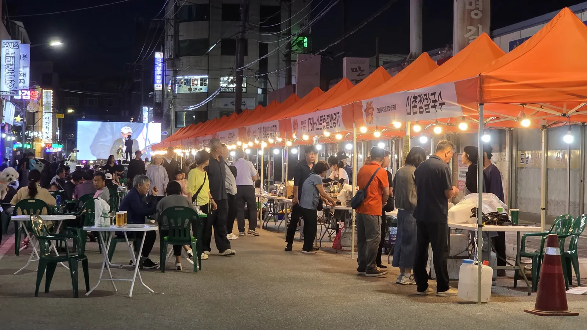
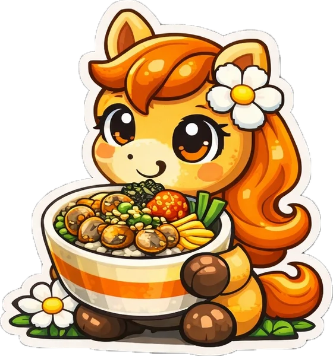
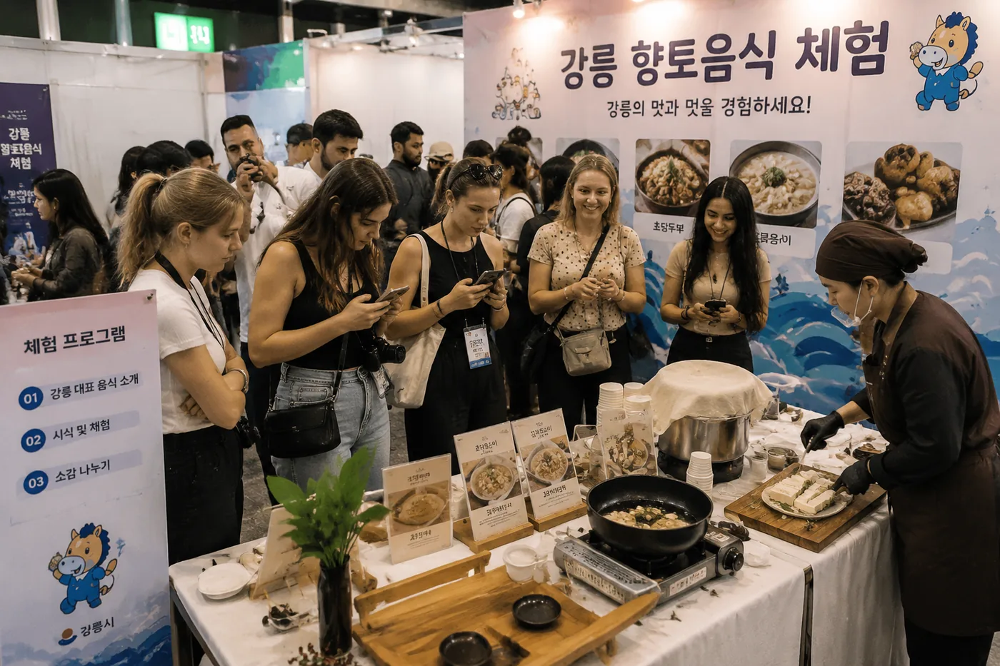

🥟
초당두부
바닷물로 간을 맞추는 강릉 대표 향토음식. 3km 거리 초당순두부마을과 연계합니다.
관광지의 맛이 아니라 강릉 사람들이 다니던 노포의 맛입니다. 농식품부 K-미식벨트와 연계해 향토음식을 한 줄에 모았습니다.
바닷물로 간을 맞추는 강릉 대표 향토음식. 3km 거리 초당순두부마을과 연계합니다.
강원도 감자를 갈아 빚은 옹심이. 놀아존에서 직접 만들어 보는 체험도 운영합니다.
동해 해산물을 아낌없이 넣는 강릉식 짬뽕. 골목 노포의 대표 메뉴입니다.
커피의 도시 강릉. 로스팅 체험과 함께 골목의 밤을 여는 한 잔을 만납니다.


K-미식벨트 어서와존과 상권 내 노포·맛집을 소개합니다.
※ 영어·중국어·일본어 페이지는 사이트 정식 오픈 후 순차 제공됩니다.
